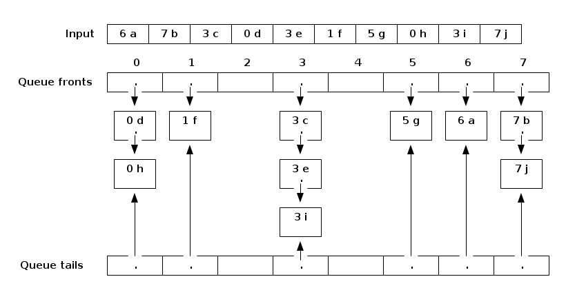
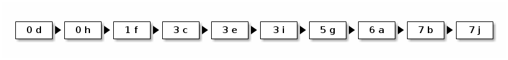

notes34
Table of Contents
Lecture 34
Today's reading: Goodrich & Tamassia, Sections 11.3.1 & 11.5.
SELECTION
Suppose that we want to find the kth smallest key in a list. In other words, we want to know which item has index j if the list is sorted (where j = k - 1). We could simply sort the list, then look up the item at index j. But if we don't actually need to sort the list, is there a faster way? This problem is called selection.
One example is finding the median of a set of keys. In an array of n items, we are looking for the item whose index is \(j = \Big \lfloor \frac{n}{2} \Big \rfloor\) in the sorted list.
Quickselect
We can modify quicksort to perform selection for us. Observe that when we choose a pivot v and use it to partition the list into three lists I1, Iv, and I2, we know which of the three lists contains index j, because we know the lengths of I1 and I2. Therefore, we only need to search one of the three lists.
Here's the quickselect algorithm for finding the item at index j - that is, having the (j + 1)th smallest key.
Start with an unsorted list I of n input items.
Choose a pivot item v from I.
Partition I into three unsorted lists I1, Iv, and I2.
- I1 contains all items whose keys are smaller than v's key.
- I2 contains all items whose keys are larger than v's.
- Iv contains the pivot v.
- Items with the same key as v can go into any of the three lists.
(In list-based quickselect, they go into Iv; in array-based quickselect,
they go into I1 and I2, just like in array-based quicksort.)
if (j < |I1|) {
Recursively find the item with index j in I1; return it.
} else if (j < |I1| + |Iv|) {
Return the pivot v.
} else { // j >= |I1| + |Iv|.
Recursively find the item with index j - |I1| - |Iv| in I2; return it.
}
The advantage of quickselect over quicksort is that we only have to make one recursive call, instead of two. Since we make at most one recursive call at every level of the recursion tree, quickselect is much faster than quicksort. I won't analyze quickselect here, but it runs in Theta(n) average time if we select pivots randomly.
We can easily modify the code for quicksort on arrays, presented in Lecture 31, to do selection. The partitioning step is done exactly according to the Lecture 31 pseudocode for array quicksort. Recall that when the partitioning stage finishes, the pivot is stored at index "i" (see the variable "i" in the array quicksort pseudocode). In the quickselect pseudocode above, just replace \(|I1|\) with i and \(|Iv|\) with 1.
A LOWER BOUND ON COMPARISON-BASED SORTING
Suppose we have a scrambled array of n numbers, with each number from 1…n occurring once. How many possible orders can the numbers be in?
The answer is \(n!\), where \(n! = 1 * 2 * 3 * ... * (n-2) * (n-1) * n\). Here's why: the first number in the array can be anything from \(1...n\), yielding \(n\) possibilities. Once the first number is chosen, the second number can be any one of the remaining \(n-1\) numbers, so there are \(n * (n-1)\) possible choices of the first two numbers. The third number can be any one of the remaining \(n-2\) numbers, yielding \(n * (n-1) * (n-2)\) possibilities for the first three numbers. Continue this reasoning to its logical conclusion.
Each different order is called a permutation of the numbers, and there are n! possible permutations. (For Homework 9, you are asked to create a random permutation of maze walls.)
Observe that if n > 0,
n
n! = 1 * 2 * ... * (n-1) * n <= n * n * n * ... * n * n * n = n
and (supposing n is even)
n n n/2
n! = 1 * 2 * ... * (n-1) * n >= - * (- + 1) * ... * (n-1) * n >= (n/2)
2 2
so \(n!\) is between \((n/2)^(n/2)\) and \(n^n\). Let's look at the logarithms of both these numbers: \(\log((\frac{n}{2})^{\frac{n}{2}}) = (\frac{n}{2}) \log (\frac{n}{2})\), which is in \(\mathrm{Theta}(n \log n)\), and \(\log(n^n) = n \log n\). Hence, \(log(n!)\) is also in \(\mathrm{Theta}(n \log n)\).
A comparison-based sort is one in which all decisions are based on comparing keys (generally done by "if" statements). All actions taken by the sorting algorithm are based on the results of a sequence of true/false questions. All of the sorting algorithms we have studied are comparison-based.
Suppose that two computers run the same sorting algorithm at the same time on two different inputs. Suppose that every time one computer executes an "if" statement and finds it true, the other computer executes the same "if" statement and also finds it true; likewise, when one computer executes an "if" and finds it false, so does the other. Then both computers perform exactly the same data movements (e.g. swapping the numbers at indices i and j) in exactly the same order, so they both permute their inputs in exactly the same way.
A correct sorting algorithm must generate a different sequence of true/false answers for each different permutation of 1…n, because it takes a different sequence of data movements to sort each permutation. There are n! different permutations, thus n! different sequences of true/false answers.
If a sorting algorithm asks d true/false questions, it generates <= 2d different sequences of true/false answers. If it correctly sorts every permutation of \(1...n\), then \(n! \le 2^d\), so \(\log_2 (n!) \le d\), and \(d\) is in \(\mathrm{Omega}(n \log n)\). The algorithm spends \(\mathrm{Omega}(d)\) time asking these d questions. Hence,
==============================================================================
EVERY comparison-based sorting algorithm takes \(\mathrm{Omega}(n \log n)\) worst-case time.
==============================================================================
This is an amazing claim, because it doesn't just analyze one algorithm. It says that of the thousands of comparison-based sorting algorithms that haven't even been invented yet, not one of them has any hope of beating \(O(n \log n)\) time for all inputs of length n.
LINEAR-TIME SORTING
However, there are faster sorting algorithms that can make q-way decisions for large values of q, instead of true/false (2-way) decisions. Some of these algorithms run in linear time.
Bucket Sort
Bucket sort works well when keys are distributed in a small range, e.g. from 0 to q - 1, and the number of items n is larger than, or nearly as large as, q. In other words, when \(q\) is in \(O(n)\).
We allocate an array of q queues (or singly-linked lists with tail references, which are basically the same thing, but we only need the queue operations), numbered from 0 to \(q - 1\). The queues are called buckets. We walk through the list of input items, and enqueue each item in the appropriate queue: an item with key i goes into queue i.
Each item illustrated here has a numerical key and an associated value.

When we're done, we concatenate all the queues together in order.
Concatenated output:

This data structure is exactly like a hash table (plus tail references), but the hash code just maps the key i to bucket i, and there is no compression function because there is no need for compression.
Bucket sort takes \(\mathrm{Theta}(q + n)\) time–in the best case and in the worst case. It takes \(\mathrm{Theta}(q)\) time to initialize the buckets in the beginning and to concatenate them together in the end. It takes \(\mathrm{Theta}(n)\) time to put all the items in their buckets.
If \(q\) is in \(O(n)\)–that is, the number of possible keys isn't much larger than the number of items we're sorting–then bucket sort takes \(\mathrm{Theta}(n)\) time. How did we get around the \(\mathrm{Omega}(n \log n)\) lower bound on comparison-based sorting? Bucket sort is not comparison-based. We are making a q-way decision every time we decide which queue to put an item into, instead of the true/false decisions provided by comparisons and "if" statements.
Bucket sort (as I've described it here) is said to be stable. A sort is stable if items with equal keys come out in the same order they went in. For example, observe that 3:c, 3:e, and 3:i appear in the same order in the output above as they appeared in the input. Bucket sort is not the only stable sort we have seen; insertion sort, selection sort, and mergesort can all be implemented so that they are stable. The linked list version of quicksort we have seen can be stable, but the array version is decidedly not. Heapsort is never stable. (Actually, we can make heapsort stable using a simple trick called a secondary key, which I might describe later in the semester.)
Take note that bucket sort is ONLY appropriate when keys are distributed in a small range; i.e. q is in \(O(n)\). On Monday we'll study a sorting algorithm called radix sort that will fix that limitation. The stability of bucket sort will be important for radix sort.